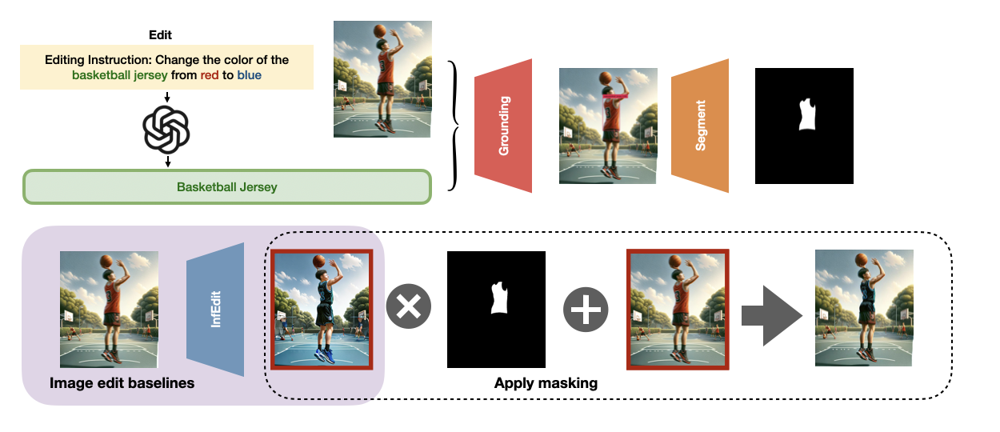
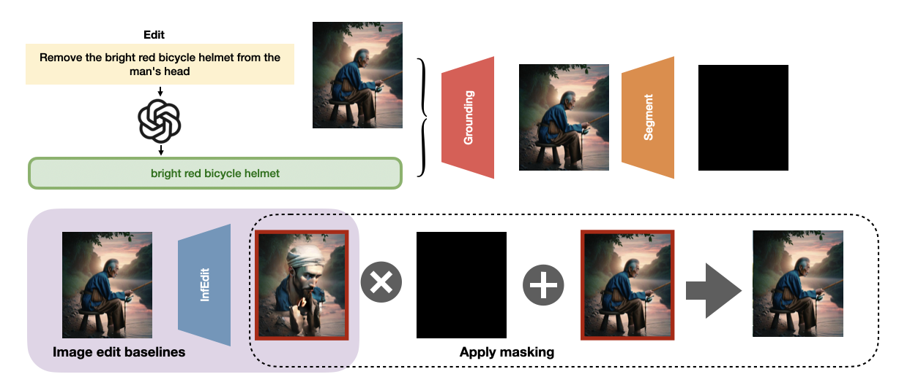
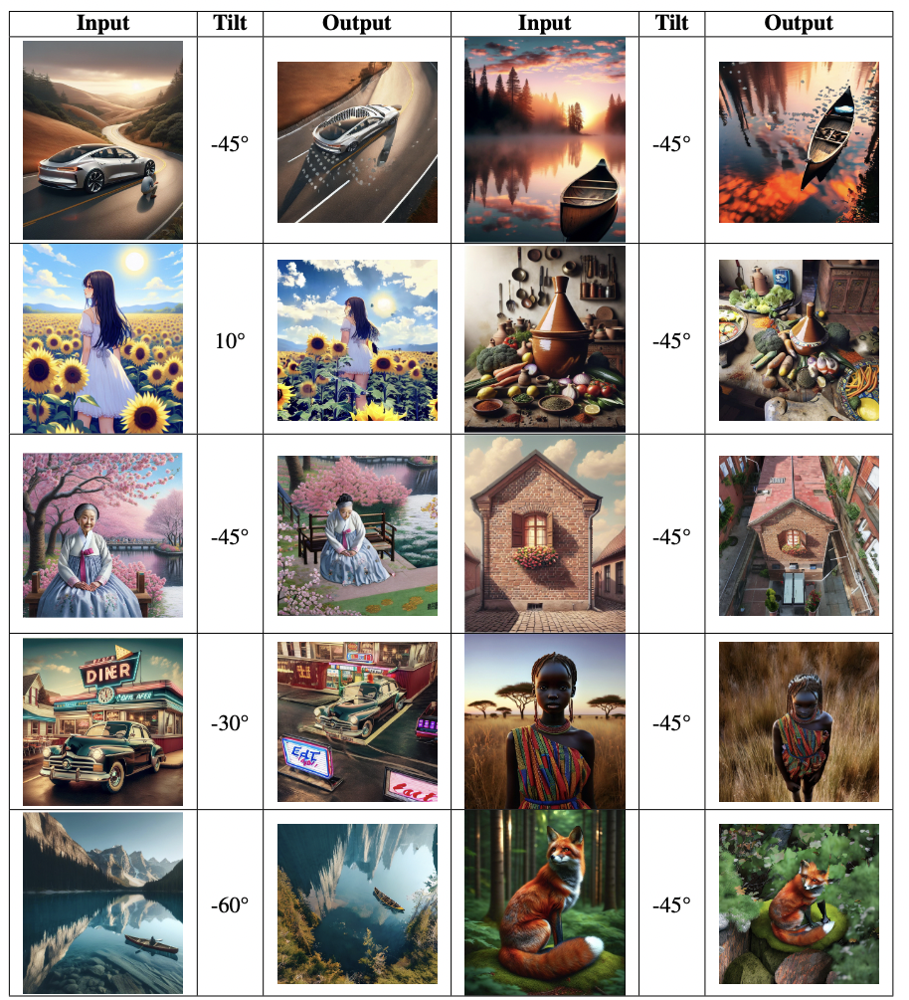
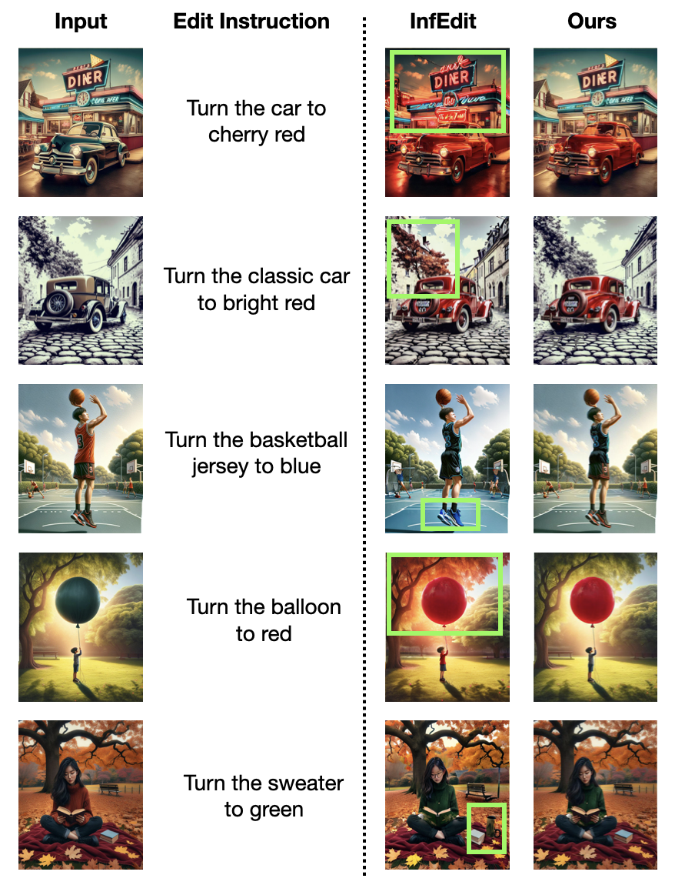

Method



Despite recent progress in diffusion-based image editing, models often struggle with fine-grained control and robustness to instruction variance. In this project, we investigate key failure modes in image-editing tasks: (1) ability to modify low- and high-level features; (2) the influence of inductive biases and commonsense assumptions, and; (3) ability to reconcile ambiguous or incorrect text conditions. We build three datasets that specifically address these failure modes individually. We find that current models exhibit distinct vulnerabilities across these categories. Building on these insights, we propose a modular pipeline to improve generation for perspective and low-level color edit actions. Our proposed model shows improvement over baselines on some metrics.



